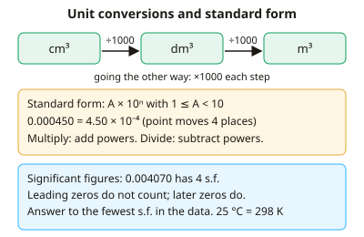

A-level Chemistry Year 12 · Topic 9
Maths skills for chemistry
Maths skills for chemistry are needed in nearly every A-level question, from moles to rates to equilibrium.
We will practise standard form, significant figures and unit conversions, then ratios, percentages and proportionality.
Then we rearrange key equations like pV = nRT and Kc, work with graphs, gradients and tangents, and use geometry to describe the shapes of molecules.
- 5 subtopics
- 182 questions
- Free: 9.1 notes and 10 questions
In this topic
- 9.1Arithmetic: standard form, significant figures, unit conversions and estimationFree below · 16 questions
- 9.2Ratios, fractions, percentages and proportionality in chemical calculationsOpen in Full Marks · 26 questions
- 9.3Algebra: rearranging and substituting into equations (n = m/M, c = n/V, pV = nRT, Kc)Open in Full Marks · 40 questions
- 9.4Graphs: plotting, line of best fit, gradients, tangents and interceptsOpen in Full Marks · 34 questions
- 9.5Geometry: bond angles, 3D molecular shapes and drawing moleculesOpen in Full Marks · 66 questions
9.1 · Free notes
Arithmetic: standard form, significant figures, unit conversions and estimation

Key points
- Standard form is A × 10ⁿ with 1 ≤ A < 10 and n an integer, e.g. 0.000450 = 4.50 × 10⁻⁴. The Avogadro constant is 6.02 × 10²³ mol⁻¹.
- To multiply in standard form, multiply the A values and add the powers. To divide, divide the A values and subtract the powers. Then adjust A back to between 1 and 10.
- On a calculator use the EXP (or ×10ˣ) button to enter standard form. Typing '× 10 ^' with the wrong bracketing is a common source of lost marks.
- Significant figures start at the first non-zero digit. Leading zeros do not count, but trailing zeros after other digits do, so 0.004070 has 4 s.f.
- Give the final answer to the same number of s.f. as the least precise data, usually 3 s.f. Do not round intermediate values; round only at the end.
- Volume: 1 dm³ = 1000 cm³ = 10⁻³ m³. To go from cm³ to dm³ divide by 1000, and to go from dm³ to cm³ multiply by 1000.
- Other conversions: 1 g = 1000 mg, 1 kg = 1000 g, 1 kPa = 1000 Pa, and K = °C + 273. A temperature change has the same numerical value in K and °C.
- Prefixes: kilo (10³), milli (10⁻³), micro (10⁻⁶), nano (10⁻⁹). Always state units in the final answer, e.g. mol dm⁻³ for concentration and g mol⁻¹ for molar mass.
- Estimation: round each number to 1 s.f. to check that an answer has the right order of magnitude. This catches slips of ×1000 in unit conversions.
- For a mean titre, use only concordant titres (within 0.10 cm³ of each other). Ignore the rough titre and any outliers.
In more detail
- Worked standard form: (3.0 × 10⁴) × (2.0 × 10⁻⁷) = 6.0 × 10⁻³; (8.0 × 10⁵) ÷ (4.0 × 10²) = 2.0 × 10³.
- Worked significant figures: 0.004 070 has 4 s.f. (4, 0, 7, 0); 3500 is ambiguous, so write 3.5 × 10³ (2 s.f.) or 3.50 × 10³ (3 s.f.).
- Worked conversion: 250 cm³ = 0.250 dm³ = 2.50 × 10⁻⁴ m³; 101 kPa = 1.01 × 10⁵ Pa; 25 °C = 298 K.
- Estimation check: 0.0496 mol × 58.4 g mol⁻¹ ≈ 0.05 × 60 = 3 g, so an answer of 2.90 g is sensible but 29.0 g is not.
Practice
Arithmetic: standard form, significant figures, unit conversions and estimation: 10 questions
Pick an answer to check it, or open the answer for the explanation.
1. How many significant figures are there in the mass 0.004070 g?
- 4
- 5
- 3
- 6
Show answer
A: 4. Leading zeros do not count. The significant digits are 4, 0, 7 and 0, because the zero between and the trailing zero after non-zero digits both count. That makes 4.
2. A pipette delivers 25.0 cm³ of solution. What is this volume in dm³?
- 0.0250 dm³
- 0.250 dm³
- 25 000 dm³
- 2.50 dm³
Show answer
A: 0.0250 dm³. Divide cm³ by 1000 to get dm³: 25.0 ÷ 1000 = 0.0250 dm³.
3. A reaction mixture warms from 25 °C to 60 °C. What is the temperature rise in kelvin?
- 35 K
- 308 K
- 333 K
- 298 K
Show answer
A: 35 K. The rise is 60 − 25 = 35 °C. A temperature difference has the same value in K, so 35 K. Converting to kelvin first gives 298 K and 333 K, but the same difference.
4. A student works out 5.00 ÷ 3.0 on a calculator. To the correct number of significant figures, the answer is:
- 1.6
- 1.667
- 1.67
- 1.7
Show answer
D: 1.7. The least precise value (3.0) has 2 s.f., so the answer is given to 2 s.f. 1.666… rounds to 1.7.
5. Which is the best estimate of 0.0198 × 49.7?
- 0.1
- 1
- 10
- 100
Show answer
B: 1. Rounding gives 0.02 × 50 = 1. The exact answer is 0.984, so the order of magnitude is 1.
6. A tank has a volume of 0.0450 m³. What is this volume in dm³?
- 45 000 dm³
- 0.0450 dm³
- 4.50 × 10⁻⁵ dm³
- 45.0 dm³
Show answer
D: 45.0 dm³. 1 m³ = 1000 dm³, so multiply by 1000 to get 45.0 dm³. 45 000 would be the volume in cm³.
7. Which of these is NOT correctly written in standard form?
- 9.00 × 10⁰
- 12.5 × 10³
- 1.60 × 10⁻¹⁹
- 6.02 × 10²³
Show answer
B: 12.5 × 10³. The number before the power of ten must be at least 1 and less than 10. 12.5 × 10³ should be written 1.25 × 10⁴.
8. Titres: 24.15, 24.20, 24.10 and 25.40 cm³. What mean titre should be used?
- 24.10 cm³
- 24.20 cm³
- 24.46 cm³
- 24.15 cm³
Show answer
D: 24.15 cm³. Only concordant titres (within 0.10 cm³) are averaged, so the outlier 25.40 is excluded. (24.15 + 24.20 + 24.10) ÷ 3 = 24.15 cm³.
9. The boiling point of ethanol is 78 °C. What is this temperature in kelvin?
- 451 K
- 78 K
- 351 K
- 195 K
Show answer
C: 351 K. T (K) = temperature (°C) + 273 = 78 + 273 = 351 K. Subtracting 78 from 273 gives 195, and 451 comes from wrongly adding 373.
10. A student calculates 0.250 g ÷ 30.0 g mol⁻¹. Which answer is correctly rounded to the right number of significant figures?
- 0.008 mol
- 0.00833 mol
- 0.00834 mol
- 0.0083 mol
Show answer
B: 0.00833 mol. The calculator gives 0.0083333…, and the data have 3 s.f. The answer is 0.00833 mol, with leading zeros not counted. 0.00834 rounds wrongly and the others have too few s.f.
Keep going in Full Marks
Full Marks has 16 questions on Arithmetic: standard form, significant figures, unit conversions and estimation (6 more than here), set out in practice levels. You also get notes and 3D models for all 5 subtopics of Maths skills for chemistry, plus games, timed exams and past papers.
On your exam board
- AQATopic 3.1.3: Bonding, Topic PS: Practical and maths skills
- OCR ATopic 1: Development of practical skills in chemistry, Topic 2.2: Electrons, bonding and structure
- OCR BTopic 1: Development of practical skills in chemistry, Topic EL: Elements of life
- EdexcelTopic 2: Bonding and structure, Topic S: Practical and maths skills
Not in the Cambridge specification.